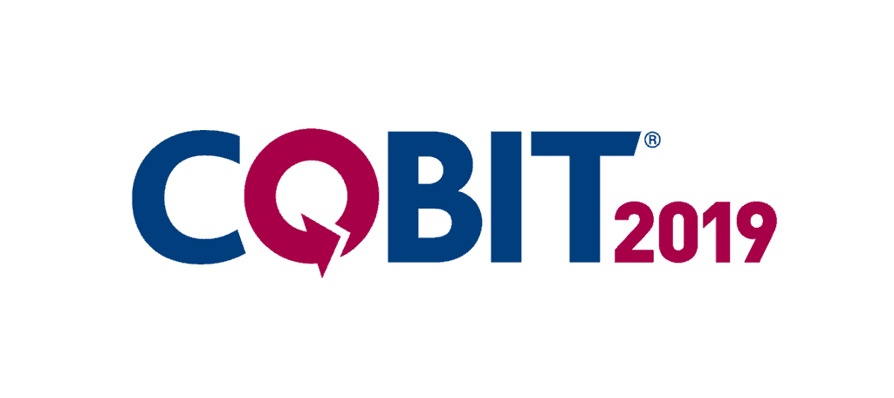

¿Qué es la Gobernanza de TI?
La Gobernanza de TI es un conjunto de prácticas, políticas y procesos que aseguran que la tecnología de la información se utilice de manera eficiente, alineada con los objetivos estratégicos de una organización y cumpliendo con normativas y regulaciones.
Objetivos de la Gobernanza de TI
- Alinear la TI con los objetivos del negocio.
Asegurar que las inversiones y estrategias de TI contribuyan directamente al éxito y crecimiento de la organización. - Optimizar los recursos tecnológicos.
Gestionar eficientemente el hardware, software, infraestructura y personal de TI para reducir costos y maximizar el rendimiento. - Garantizar la seguridad y el cumplimiento normativo.
Implementar controles y buenas prácticas para proteger la información y cumplir con regulaciones legales y estándares de la industria. - Mejorar la toma de decisiones estratégicas en TI.
Proveer información clara y procesos bien definidos para tomar decisiones sobre tecnología de manera informada y efectiva. - Gestionar riesgos asociados con la tecnología.
dentificar, evaluar y mitigar posibles amenazas relacionadas con la TI, como ciberataques, fallas en sistemas o pérdidas de datos.
Marcos de Referencia en Gobernanza de TI

COBIT (Control Objectives for Information and Related Technologies)
- Proporciona un marco integral para la gestión y gobernanza de TI.
- Define procesos, principios y mejores prácticas para garantizar un uso eficaz de la tecnología.
ITIL (Information Technology Infrastructure Library)
- Se enfoca en la gestión de servicios de TI.
- Mejora la eficiencia y la entrega de valor a los usuarios.

ISO/IEC 38500
- Estándar internacional para la gobernanza corporativa de TI.
- Establece principios y buenas prácticas para el uso de TI en las organizaciones.